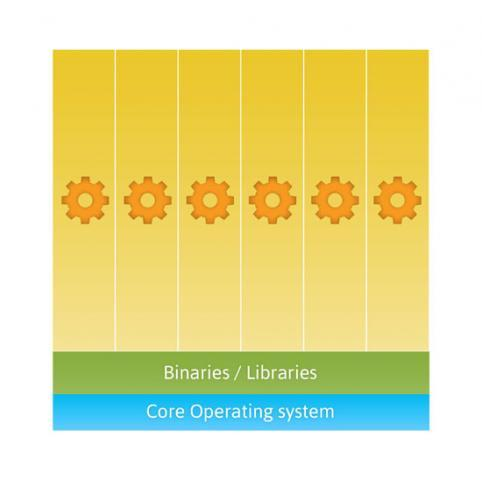
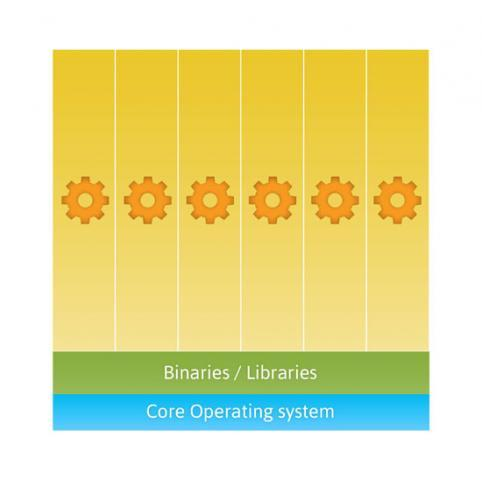

Containers
bartekKowalik.aboutMe
- Scala dev @ VirtusLab
- student @ AGH
Work difficulties
Customers

Code base
Documentation
ENVIRONMENT
Why is it difficult?
complexity
Typical development stack
And the result is...
How can we prevent this?
Containers!
VMs vs Containers
 

LXC
(LinuX Containers)
https://linuxcontainers.org/Briefly
- system-level virtualization
- it is not virtual machine
- cgroups usage
- provides process container
Available commands
- # lxc-create -n NAME -t TEMPLATE -- TEMPLATE_OPTIONS
- # lxc-start -n NAME -d
- # lxc-stop -n NAME
- # lxc-destroy -n NAME
- # lxc-console -n NAME
- # lxc-attach -n NAME
DEMO
Internet inside container
Host configuration
# sysctl net.ipv4.ip_forward=1
# dhcpd lxcbr0
# iptables -t nat -A POSTROUTING -o wlp3s0 -j MASQUERADE
# iptables -A FORWARD -i wlp3s0 -o lxcbr0 -m state \
--state RELATED,ESTABLISHED -j ACCEPT
# iptables -A FORWARD -i lxcbr0 -o wlp3s0 -j ACCEPT
LXC containter config
lxc.network.type = veth
lxc.network.flags= = up
lxc.network.link = lxcbr0
Pros
- no host pollution
- powerful configuration
- no virtualization overhead
- works in background
Cons
- bare distro after install
- difficulties in network configuration
- some problems when running different distro than host
- requires Linux indepth knowledge
Is there something simpler?
Briefly
- written in GO
- used to use LXC as engine
- git-like managment
How to start?
# docker search WHAT
# docker pull IMAGE
# docker images
# docker run ubuntu:14.10 /bin/echo "Hello world"
# docker ps -a
Still looking like LXC?
Take a look a this:
Dockerfile
FROM ubuntu:14.04
MAINTAINER Thatcher R. Peskens "thatcher@dotcloud.com"
RUN apt-get update && apt-get install -y openssh-server
RUN mkdir /var/run/sshd
RUN echo 'root:screencast' | chpasswd
RUN sed -i 's/PermitRootLogin without-password/PermitRootLogin yes/' /etc/ssh/sshd_config
EXPOSE 22
CMD ["/usr/sbin/sshd", "-D"]
Pros
- runs everywhere!
- huge community support
- rich documentation with examples
- predefined images in repository
Cons
not found yet
Where to use?
- integration testing
- multiple environments
- easy sharing
Sum up
- lightweight
- fast
- easy scaling